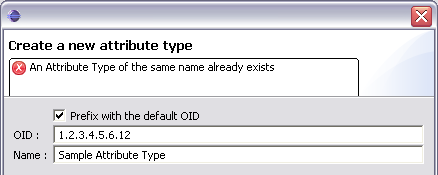
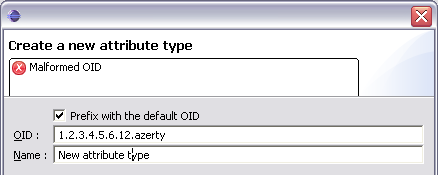

Creating a new attribute type
In this section, you will learn how to create a new attribute type.
- In the Schemas view, click the Create a new attribute type button in the toolbar.
Note: It is not possible to create a new attribute type in a core schema.

- In the OID field, enter the name of the schema.
If you want the OID field to be
pre-filled with your organisation's OID, check the Prefix with default OID checkbox.
In the Name field, enter the name of the attribute type.

- If an attribute type of the same name already exists, you will see this error.

- If an element (object class or attribute type) already has the OID you provided, you will see this error.

- If you enter a bad OID, you will see this error.

- Then click Finish.